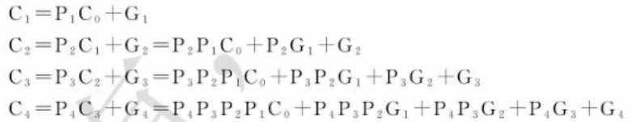

7.1 常用中规模组合逻辑电路
包含二进制并行加法器、译码器、编码器、多路选择器和多路分配器等。
7.1.1 二进制并行加法器
能够并行产生两个n为二进制数“算数和”的逻辑部件。按照进位方式不同可分为串行进位二进制并行加法器和超前进位二进制并行加法器两种类型。
- 构成思想
- 串行二进制并行加法器
由全加器级联构成，高位的“和”依赖于来自低位的进位。被加数和加数各位能够并行到达各位输入，各位全加器的进位输入按照从低位到高位逐级串行传递。这里的每一位单独计算，第二位要等到第一位计算完成后才能计算，因此运算速度较慢。 - 超前进位二进制并行加法器
超前进位二进制并行加法器通过对输入的两个数进行逻辑运算，直接判断哪一位需要进位，无需进行等待。这里对输入两数进行逻辑运算需要进行一些分析。
如果两数的某一位都是1，那么这一位必然有进位，因此定义为进位产生函数，且此时低位的进位就等于本位的进位。如果两数的某一位只有1个是1，那么此时低位的进位输入能够传送到本位的进位输出，因此定义。由此可得第i位的输出，第i位的进位
可以根据上面的结论直接写出每一位进位的表达式函数。

- 典型芯片
二进制并行加法器74283,16引脚，其中为来自低位的进位，为输出高位的进位。
功能：不仅限于加法。
- 使用加法器进行2进制减法操作
如果要使用加法器进行减法操作，需要将减数转换成补码输入。转换成补码需要对每一位取反后再加1，这里的加1可以输入到原低位进位输入端。每一次相减会有4种情况：
- 被减数为正数，减数也为正数。此时若结果为正，则原高位进位输出端输出1；若结果为负，则原高位进位输出端输出0。
- 被减数为负数，减数也为负数。此时若结果为正，则原高位进位输出端输出1,；若结果为负，则原高位进位输出端输出0。
- 被减数为正数，减数为负数。此时原最高位进位输出端必为0，但可能产生正数溢出导致结果为负数。
- 被减数为负数，减数为正数。此时原最高位进位输出端必为1，但可能产生负数溢出导致结果为正数。
判断溢出的设计思路：首先根据两数最高位判断其为正数还是负数，然后将判断结果与计算结果进行分析。如果两数均为正数但结果为负，或两数均为负数但结果为正，则产生溢出。实际上就是判断两个输入数与输出数的最高位的关系。
如果需要对加法器进行级联处理以进行更多位数的减法，那么每一个4位加法器中两数将不再有正负数的概念，均看做无符号正整数。此时仅需考虑第一种情况。
对低位借位处理的设计思路：当低位不存在借位时，需要在原低位进位输入端中输入1以构造补码，存在借位时输入0即相当于借位减1。
对向高位借位处理的设计思路：当本位需要借位时，原高位进位输出端为0，由于对于高位而言，输入0表示需要借位，因此可直接将本位原高位进位输出与高位原低位进位输出相连。
- 使用加法器计算余三码的加法
余三码比8421码多3，计算规律：两个1位余三码相加若无进位，则需将结果减3输出，如有进位，则需将结果加3输出。进位时会产生进位信息，可将低位进位输入与高位进位输出直接相连- 使用加法器计算4位2进制数乘法
4位二进制乘法的结果至多8位，可以通过输入列出竖式求出每一位的表达式：
这里的计算思路是：由于最低位不可能有进位，因此直接将输出即可。后面的位可能有进位，这里先取下图红色方框的8位相加，将最低位直接输出，高3位加进位与绿色框的4位相加；将结果最低位直接输出，高3位加进位再与蓝色框的4位相加，最终获得结果。
- 使用加法器进行4位2421码的加法
2421码加法的计算规律：
- 如果两位均小于5，计算结果若小于5直接输出，否则加5输出
- 如果两位均大于5，产生进位，计算结果若大于4直接输出，否则减5输出
- 如果两位中一位大于4，一位小于5，则将结果直接输出，有进位输出进位
- 使用加法器进行4位8421码的加法
8421码加法的加法规律：
- 如果结果小于10，则直接输出
- 如果结果大于10且无进位，则减10输出同时输出进位
- 如果结果大于10且有进位，则加6输出同时输出进位
7.2 译码器和解码器
1. 译码器
常见二进制译码器、二-十进制译码器和数字显示译码器
- 二进制译码器
二进制译码器能将n个输入转换为个输出，且输出函数与由输入变量构成最小项具有对应关系的一种多输出组合逻辑电路。其中有一个或多个使能输入端，其为有效电平时译码器才工作，对一组输入代码仅有一个输出为有效电平。
常用MSI二进制译码器：2-4线译码器、3-8线译码器（74138）
可以看到，使能端必须都为1才工作。
功能：不仅限于译码。
(1) 使用译码器实现n个变量的表达式输出
这里一般通过将表达式转化为最小项或画出卡诺图加以处理。如要求使用3-8线译码器输出逻辑函数，1个3-8线译码器仅有8个输出，不足以产生16个输出，因此使用两个3-8线译码器。其中随机选取一个输入变量输入到使能端，规定当该变量取值为0时使用哪一个译码器，取值为1时使用另一个译码器。将满足函数条件的最小项全部连入一个与非门，即可在与非门后获得函数的正确输出。电路图如下，输入从低到高为：CBAD
- 二-十进制译码器
将4位BCD码的10组代码翻译成10个与十进制数字符号对应的输出信号。7442低电平有效。
当产生非法的BCD码时，7442拒绝译码，避免产生错误信息
- 七段显示译码器
用于进行数字显示的译码器，输出接入液晶数码管用于显示。
：熄灭输入端（低电平有效），有时作为输入信号有时输出信号。当作为输入时，其为低电平则所有灯灭；当作为输出时，当且输入数码为全0时，；否则。其主要用于多个数字显示多个译码器的连接。
：灯测试端，当时所有灯全亮。
：灭0输入端，熄灭前置0，即无意义0的显示。且输入为全0时，不显示0。
2. 编码器
二-十进制编码器、优先编码器。
- 二-十进制编码器
将10进制数字0-9分别编成BCD码，输入端10个，输出端4个。
- 优先编码器
上面的二-十进制编码器的输入信号互斥，任何时候只允许一个输入端为有效信号。优先编码器将所有输入确定一个优先级，当多个信号同时输入时，会选择最高优先级的信号输出编码。
74148优先编码器输入与输出端均以低电平为有效电平，即若，则输出为000。
为选通输入端（允许输入端），当其为0时编码器才工作
为选通输出端（允许输出端），当且无信号输入时
为工作状态标志，当且有信号输入时才为0
上面两个端口用于扩展编码。如果要对16个输入进行优先编码，则共有4个输出。令一个编码器编码输入0~7，另一个编码8~15，当输入信号为高8位时禁用处理低位的编码器防止两个编码器同时有信号输入而产生错误输出。

由上图可知输入下标越大优先级越高。
7.1.3 多路选择器和多路分配器
1. 多路选择器
具有个输入和n个选择控制变量，根据选择控制变量决定输出是输入的哪一个。
双4路 MUX 74153、8路 MUX 74152/74151和16路 MUX 74150
应用：
- 用带有n个选择控制变量的MUX实现含有n个变量的函数的输出
将函数的真值表依次输入到对应的输入端，通过将变量输入到选择控制变量，就能获得相应的输出。
假设输入从0到7分别为0,0,1,1,1,1,0,0，选择控制变量为。则该选择器的输出相当于求，对应真值表：
| A2\A1A0 | 00 | 01 | 11 | 10 |
|---|---|---|---|---|
| 0 | 0 | 0 | 1 | 1 |
| 1 | 1 | 1 | 0 | 0 |
即，表示第i个由输入变量组成的最小项。
- 用带有n个选择控制变量的MUX实现含有n+1个变量的函数的输出
此时选择控制变量的输入端数量不足，需要随机选择一个控制变量按照某种方式输入到个输入中去。
假设需要实现如下真值表的功能：
| A3A2\A1A0 | 00 | 01 | 11 | 10 |
|---|---|---|---|---|
| 00 | 0 | 1 | 1 | 1 |
| 01 | 1 | 1 | 1 | 0 |
| 11 | 0 | 0 | 0 | 1 |
| 10 | 0 | 0 | 1 | 1 |
假设控制变量输入选择，那么其选择的实际上是两个状态，至于这两个状态如何区分需要看的值如何。
可以将真值表按照的8种取值分为8块，分别对每一块进行分析，求出每一块中数值与的关系。电路图如下所示。
- 用带有n个选择控制变量的MUX实现含有大于n+1个变量的函数的输出
思想与处理n+1个变量的输出相同。
例：用一个2-4线选择器实现上面一个例子的真值表。
将作为控制变量输入，可将真值表按照的4种取值划分为4块：
当时，输出与的关系为：
当时，输出与的关系为：
当时，输出与的关系为：
当时，输出与的关系为：
电路图如下所示：
2. 多路分配器
单输入多输出，从哪一路输出取决于选择控制变量，与选择器相反。
应用：
将译码器与选择器结合为比较器：一个数输入到译码器中获得8个输出，将这8个输出接到选择器中，选择器控制变量输入第二个数，如果两数相等，则输出应该为0，否则会输出1。
7.2 常用中规模时序逻辑电路
7.2.1 集成计数器
1. 集成同步计数器
由4位二进制同步加法计数器74161、单时钟4位二进制同步可逆计数器74191、单时钟十进制可逆计数器74190、双时钟4位二进制同步可逆计数器74193等
输入信号说明：
：清除端，高电平强制清除
：预置控制，高电平时执行自增或自减操作，自增或自减取决于时钟信号
：预置初值，前两个信号为低电平时直接为计数器赋值
：累加计数脉冲
：累减计数脉冲
输出信号：
：计数值
：进位输出负脉冲
：结尾输出负脉冲
应用：构成任意模的计数器
如果需要构成模小于16的计数器，则只需对输出进行判断，达到某个值后触发电平连接CLR端清零即可。如果模大于16，则需要将多个这样的计数器串联（将进位端与计数脉冲连接），对输出进行统一判断，同样是达到某个值后触发电平连接CLR端清零。
2. 集成异步计数器
二—五—十进制加法计数器74290
功能描述：（注意上图的计数是在下降沿产生的！）
- 异步清零：时直接对清零
- 异步置9：时直接置9使
- 计数：时计数：
(1) 模2计数：计数脉冲接到从输出
(2) 模5计数：计数脉冲接到从输出
(3) 模10计数：将模2计数的输出接到模5脉冲输入或将模5计数的输出接到模2脉冲输入（两种计数方式相同计数的输出不同）
7.2.2 集成寄存器
寄存器：数字系统中用于存放数据或运算结果的一种常用逻辑器件。
功能：接收数据、保存数据、传送数据、左右移位、串并输入输出、预置、清零等
一、典型芯片：74194——4位双向移位寄存器
输入信号说明：
：清零
：并行数据输入
：右移串行数据输入，右移后置于最高位
：左移串行数据输入，左移后置于最低位
：工作方式选择：保持，右移，左移，并行输入
：工作脉冲
输出信号说明：
：寄存器状态